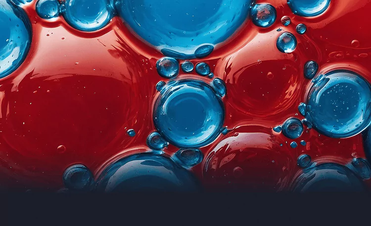
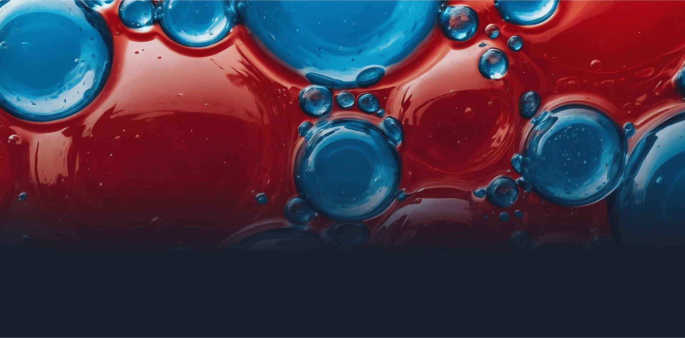
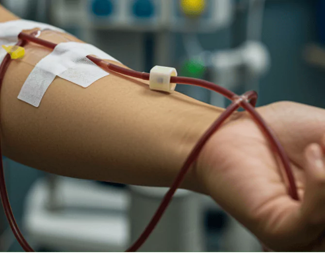
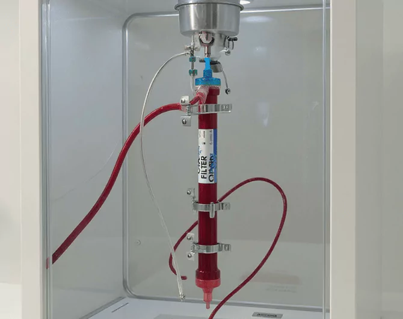
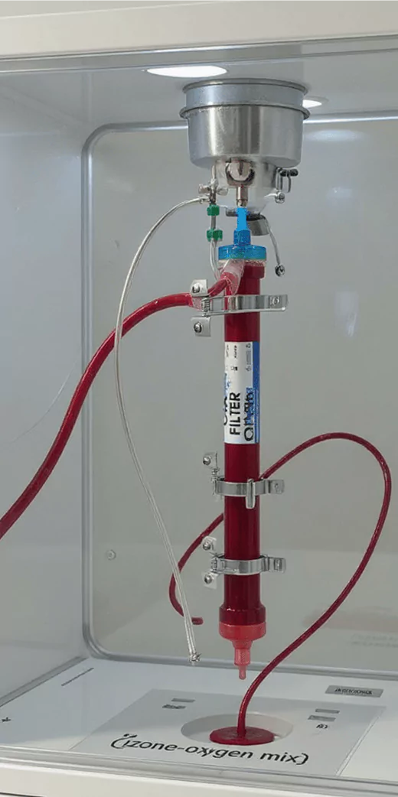
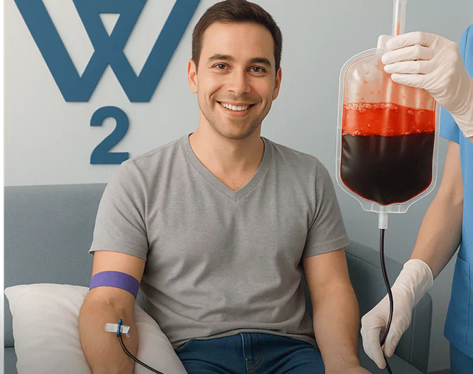
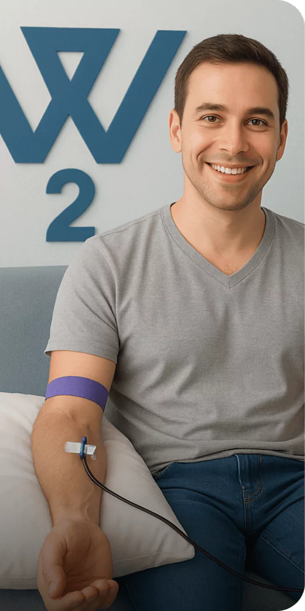
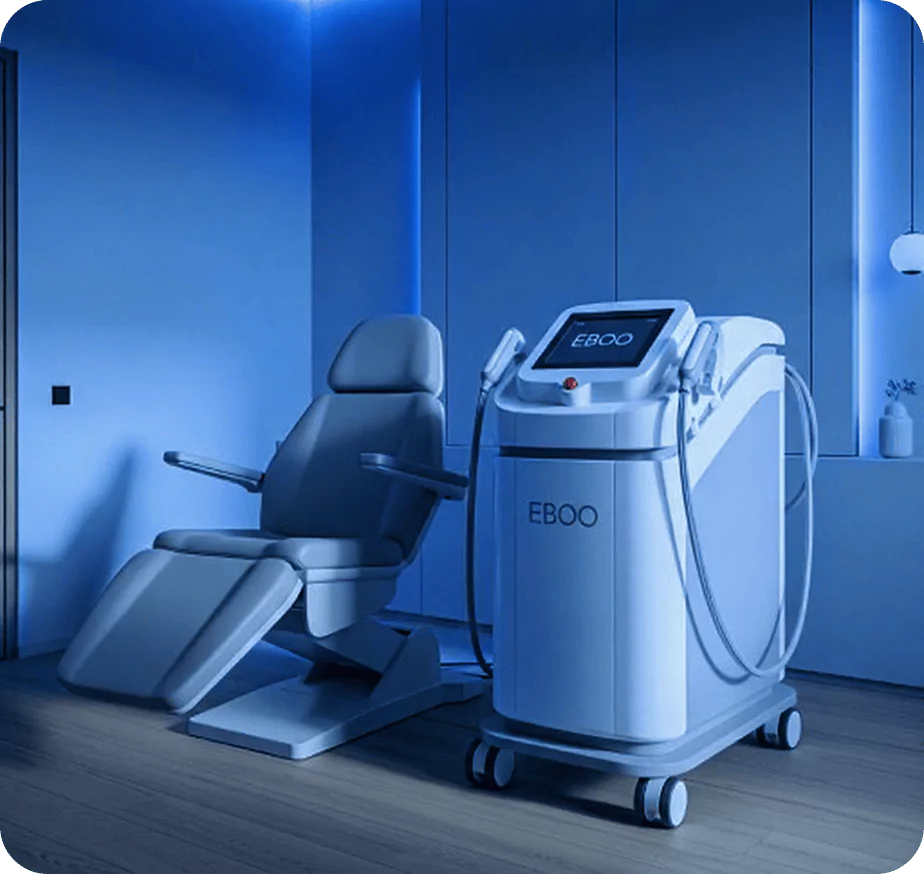
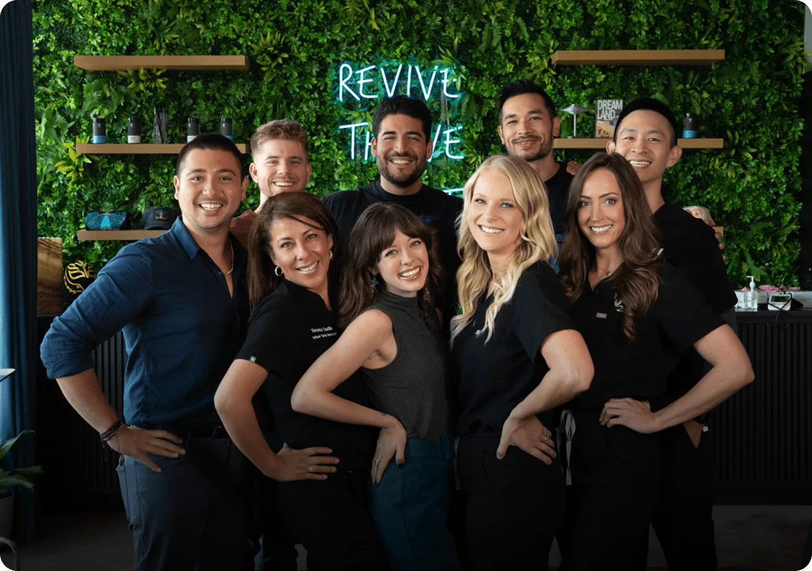

EBOO, Advanced Ozone Blood Therapy
Purify, Oxygenate & Restore at the Cellular Level
Extracorporeal Blood Oxygenation and Ozonation (EBOO) is the most advanced form of ozone therapy available today, designed to detox, oxygenate, and reset your blood in a single session. By circulating your blood through a precision ozone-oxygen circuit, EBOO delivers full body immune and detox support while super charging cellular healing and energy production.
What Is EBOO?
EBOO is a next generation ozone treatment where blood is drawn, filtered, infused with medical grade ozone, and safely returned to the body in real‑time. Unlike traditional ozone IVs, EBOO works extracorporeally, leveraging dialysis‑grade technology to:
-
Remove toxins, pathogens, and cellular debris
-
Re‑infuse highly oxygenated, ozone‑treated blood
-
Rapidly modulate inflammation and immune response
This high dose ozone exposure achieves deep circulatory detox with a potency unmatched by other delivery methods.
How EBOO Works
-

Dual‑IV Access
Dual‑IV Access
Blood is gently drawn from one arm while the treated blood is simultaneously returned to the other.
-


Ozonate & Filter
Ozonate & Filter
Inside a sterile chamber, blood passes through a precision filter and is exposed to a calibrated ozone‑oxygen mix.
-


Return Flow
Return Flow
Oxygen‑rich, ozone‑activated blood re-enters the body, delivering immediate systemic benefits.
-
Session Length:
~45,60 minutes
-
Downtime:
None
-
Series:
3,6 sessions recommended for sustained results.
Benefits
Cellular Detoxification
Removes heavy metals, pathogens, mold toxins, and metabolic waste.
Enhanced Oxygen Utilization
Boosts red‑blood‑cell function and oxygen delivery to tissues.
Immune System Reset
Supports auto‑immunity, chronic infection recovery, and immune over‑activity.
Neuro & Cognitive Support
Reduces neuro‑inflammation linked to brain fog and fatigue.
Energy & Recovery Boost
Stimulates mitochondrial repair, ideal for athletes, long‑haulers, and high performers.
EBOO amplifies outcomes when paired with IV Therapy, Red‑Light Therapy, and HBOT creating a powerful multi‑system recovery protocol tailored to your biomarkers.

Who Is EBOO For?
EBOO is a next generation ozone treatment where blood is drawn, filtered, infused with medical grade ozone, and safely returned to the body in real‑time.
- Chronic Lyme or mold illness
- Autoimmune conditions
- Fatigue, brain fog, or burnout
- Detox and performance‑optimization goals
Why Ways2Well?
At Ways2Well, we merge advanced medical diagnostics with the latest regenerative therapies. Our Austin‑based Longevity Lab is one of the only centers in Texas offering full‑spectrum EBOO, delivered by clinicians specializing in precision ozone care.
